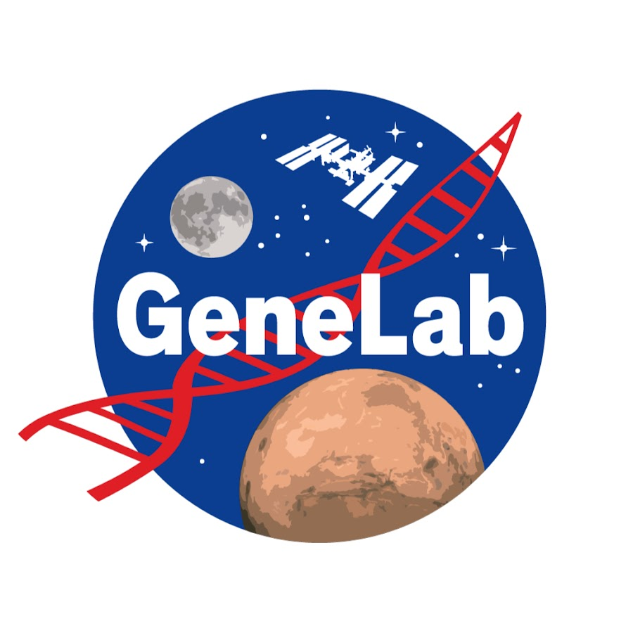

About
I am an undergraduate researcher at Duke University studying Biology and Computer Science, with a focus on the intersection of neuroscience, AI, and health systems. My work spans automated imaging pipelines, machine learning for multi-omics data, health policy analysis, and pharmaceutical research — with the goal of transforming complex biological data into actionable clinical insights.
Education

Bachelor of Arts in Biology and Computer Science
Research Experience

AI/ML Analysis Working Group Member, GeneLab
- Developing ML models to analyze >1M single-cell perturb-seq profiles and integrate multi-omics data for astronaut health applications.
- Designing predictive frameworks to classify thousands of genetic perturbations and inform countermeasure design for long-duration space missions.
Undergraduate Research Assistant
Advisors: Carlene Moore, PhD; Malak Fouani, PhD
- Developed automated imaging pipeline integrating Cellpose segmentation, Z-projections, and channel alignment — reducing analysis time from 8 minutes to 6 seconds per image (>99% efficiency gain).
- Analyzed 5,000+ images from immunocytochemistry and calcium imaging experiments to investigate TRPV4 ion channels and P2Y receptors in migraines/headaches.
Summer Catalyst Intern
Advisors: Julian Motzkin, MD, PhD; Prasad Shirvalkar, MD, PhD
- Designed a 45-field diagnostic evaluation framework to benchmark clinical performance, regulatory readiness, and commercialization potential.
- Conducted comparative analysis of 20+ competitor solutions across 9 regulatory pathways, identifying gaps in clinical utility and market positioning.
Student Expo Program Researcher / Presenter
Advisors: Matt Hickman, PhD; Matt Durose, MS
- Analyzed the Census of Publicly Funded Forensic Crime Laboratories, 2020 dataset (538 variables across federal, state, county, and municipal labs) using R.
- Identified disparities in competency results: federal labs averaged 93.9% vs. lower ratings at state, county, and municipal levels.
Summer Research Intern
Advisor: Feng Luo
- Conducted 8 experiments (ELISA, MSD, Gyroslab) assessing edema side effects of tPA treatment for ischemic stroke and testing anti-FXII antibodies for therapy use.
- Created 50-slide presentation on potential utilization of Regeneron antibodies as treatment for tPA side effects.
Publications
The TRPV4-Mast Cell Axis: Implications for Neurogenic Inflammation and Chronic Disease
International Journal of Molecular Science, January 2026
Biomarker Study in Children and Adolescents with New Daily Persistent Headache (NDPH)
Submitted to Cephalalgia, December 2025
Anti-CGRP neutralizing antibody for modulation of neurogenic inflammation in trigeminal and glossopharyngeal pain associated with small fiber neuropathy/fibromyalgia, a phase 1B clinical study
In preparation, 2025
Cell Degranulation Study